Tema 6: Modelos ARIMA de Box&Jenkins(4)
![]()
Paquetes de R
Para este tema, se necesita cargar estos paquetes:
Introducción
Contenido
Introducción
SAR(1)
SMA(1)
SARIMA
Introducción
Series con comportamiento periódico son comunes de encontrar en la práctica.
El tipo que ocurre con más frecuencia es el patrón estacional.
- Por ejm: datos mensuales, cuatrimestres, trimestres, diarios, etc.
Sea \(s\) el período del componente estacional.
Se espera que el comportamiento se repita en cada \(s\) períodos.
Es decir, \(Z_t\) sea similar a las observaciones en \(Z_{t+sk}\) para \(k=\pm 1,\pm2,...\).
- Por ejemplo, para datos mensuales, \(Z_t\) sea similar a las observaciones en \(Z_{t+ 12 k}\) para \(k=\pm 1,\pm2,...\).
Se espera que \(Z_t\) tenga correlación alta con \(Z_{t+sk}\) para \(k=\pm 1,\pm2,...\).
De esta forma, se puede detectar la estacionalidad con el correlograma.
SAR(1)
Contenido
Introducción
SAR(1)
SMA(1)
SARIMA
AR(1) estacional: SAR(1)
- Este proceso está definido por:
\[Z_t=C+\Phi_s Z_{t-s}+a_t\]
- La ACF es:
\[\begin{align*} \rho_k &= \Phi_s^{k/s}, \quad k = 0, \pm s, \pm 2s, \pm 3s, \dots \\ \rho_k &= 0, \quad \text{para otros valores de } k > 0. \end{align*}\]
- La PACF es diferente que cero en el rezago \(s\).
La acf y pacf teórica del SAR(1)12


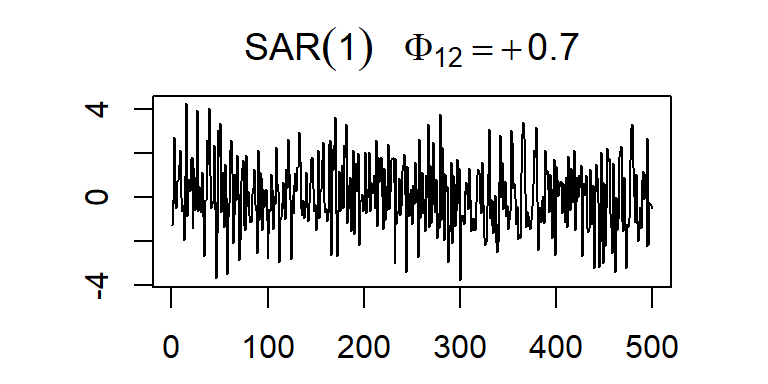
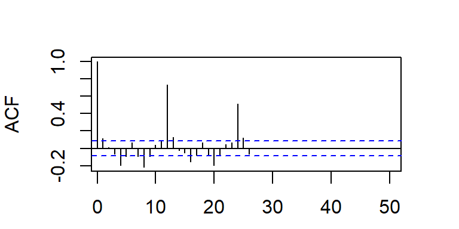
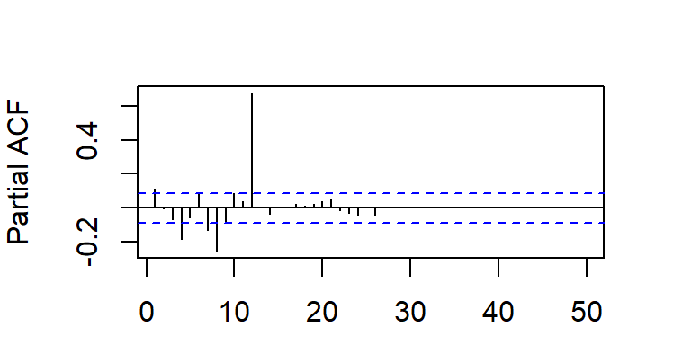
SMA(1)
Contenido
Introducción
SAR(1)
SMA(1)
SARIMA
MA(1) estacional, SMA(1)
- Este proceso está definido por:
\[Z_t=C+a_t-\Theta_s a_{t-s}\]
- La ACF es:
\[\begin{align*} \rho_0 &= 1 \\ \rho_s &= \frac{-\Theta_s}{1 + \Theta_s^2} \\ \rho_{ks} &= 0, \quad \text{para } k > 1 \end{align*}\]
- La PACF decae exponencialmente o sinusoidalmente a cero en los rezagos \(ks, k=1,2,...\).
La acf y pacf teórica del SMA(1)12


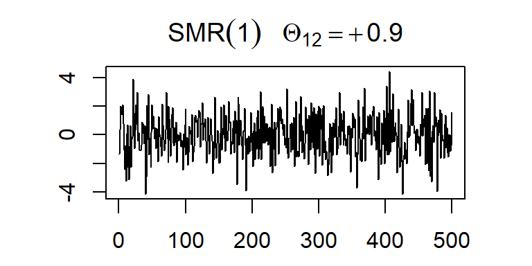

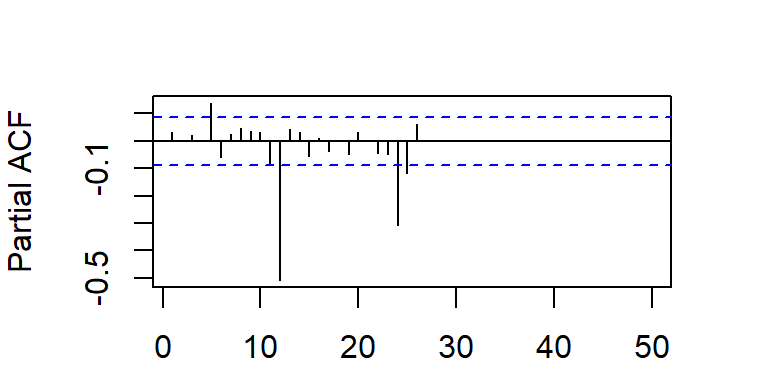
Nota
- En la práctica, la etapa de identificación de modelos estacionales es más difícil debido a que los modelos estacionales se mezclan con modelos no estacionales.
SARIMA
Contenido
Introducción
SAR(1)
SMA(1)
SARIMA
Diferenciación estacional
Cuando la ACF muestran estacas en los rezagos \(s, 2s, 3s,...\), que no caen rápidamente a cero, la serie tiene una media no estacionaria y es necesario hacer una diferenciación estacional de longitud \(s\) para obtener una media estacionaria.
La diferenciación estacional de primer orden es definida por:
\[\nabla_s Z_t=Z_t-B^{s}Z_t=(1-B^{s})Z_t=Z_t-Z_{t-s}\]
- La diferenciación estacional de segundo orden es definida por:
\[\nabla_s^2 Z_t=\nabla_s (\nabla_s Z_t)=(1-B^{s})(1-B^{s})Z_t=Z_t-2Z_{t-s}+Z_{t-2s}\]
- De la misma forma, se puede extender a \(D\) diferencias estacionales.
\[\nabla_s^D Z_t=(1-B^{s})^D Z_t\]
Modelos ARIMA estacionales (SARIMA)
En la práctica, los patrones estacionales y no estacionales se mezclan y es necesario separarlos mediante un cuidadoso examen de las ACF y PACF.
Similarmente a un modelo no estacional, el modelo multiplicativo estacional es ajustado primero por un modelo \(ARIMA(P,D,Q)\):
\[(1-\Phi_s B^s -\Phi_{2s} B^{2s}-...-\Phi_{Ps} B^{sP})(1-B^s)^D \tilde{Z}_t=\] \[(1-\Theta_{s} B^s-\Theta_{2s} B^{2s}-...-\Theta_{Qs} B^{Qs})b_t.\]
Si la serie contiene solo el patrón estacional, \(b_t\) es ruido blanco.
Si la serie posee también un patrón no estacional, \(b_t\) debe describirse con un modelo ARIMA no estacional.
Este modelo se puede simplificar con la siguiente ecuación:
\[\Phi_P(B^s)\nabla_s^D \tilde{Z}_t=\Theta_Q(B^s)b_t.\] donde:
\(\Phi_P(B^s)=1-\Phi_s B^s -\Phi_{2s} B^{2s}-...-\Phi_{Ps} B^{Ps}\) es el operador estacional autorregresivo,
\(\Theta_Q(B^s)=1-\Theta_{s} B^s-\Theta_{2s} B^{2s}-...-\Theta_{Qs} B^{Qs}\) es el operador estacional de medias móviles, y
\(\nabla_s^D=(1-B^s)^D\) es el operador de diferenciación estacional de orden \(D\).
- Si \(b_t\) es representado por un modelo \(ARIMA(p,d,q)\):
\[\phi_p(B)\nabla^d b_t=\theta_q(B)a_t.\] donde \(a_t\) es ruido blanco, entonces bajo supuestos de estacionariedad, se puede despejar:
\[ b_t=\left[ \phi_p(B)\nabla^d \right]^{-1} \theta_q(B)a_t.\] Finalmente, el modelo \(SARIMA(p,d,q)(P,D,Q)_s\) es representado por:
\[\Phi_P(B^s) \phi_p(B) \nabla^d \nabla_s^D \tilde{Z}_t=\Theta_Q(B^s) \theta_q(B)a_t.\] donde \(\phi_p(B)\) es el operador AR no estacional, \(\theta_q(B)\) es el operador MA no estacional, \(\nabla^d\) es el operador de diferenciación no estacional, \(\Phi_P(B^s)\) es el operador AR estacional, \(\Theta_Q(B^s)\) es el operador MA estacional y \(\nabla_s^D\) es el operador de diferenciación estacional.
Ejemplo
- Considere el modelo \(SARIMA(0,0,1)(1,0,0)_{12}\)
\[Z_t=0.8 Z_{t−12}+a_t- 0.5 a_{t−1}\]
- Escriba el modelo en forma compacta (usando operadores de rezago).
- Las f.a.c. y f.a.c.p. teóricas del \(SARIMA(0,0,1)(1,0,0)_{12}\).


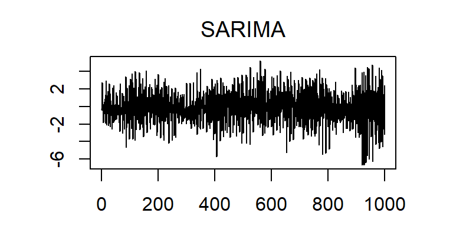
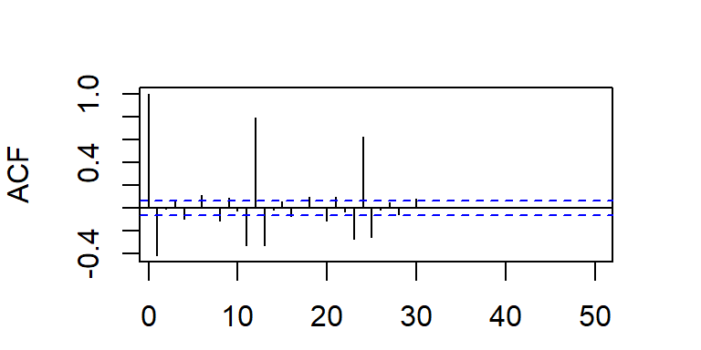
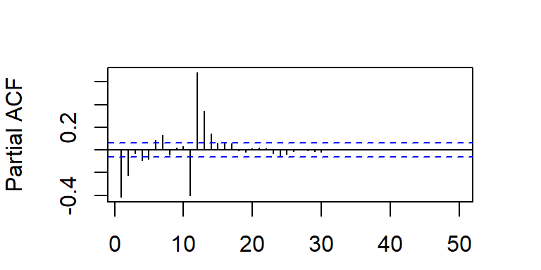
- Las f.a.c. y f.a.c.p. teóricas del \(SARIMA(1,0,0)(0,0,1)_{12}\).


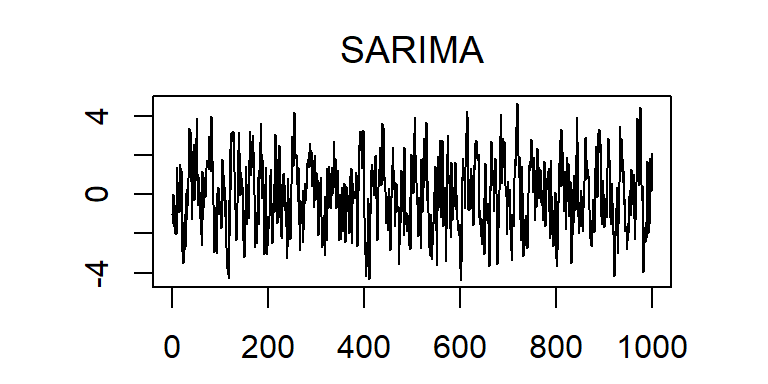
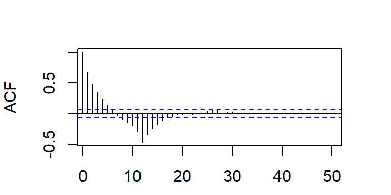
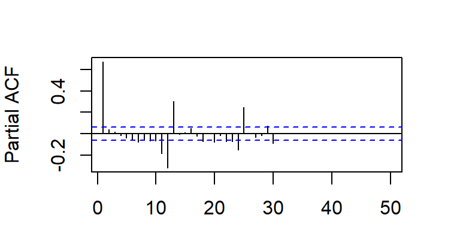